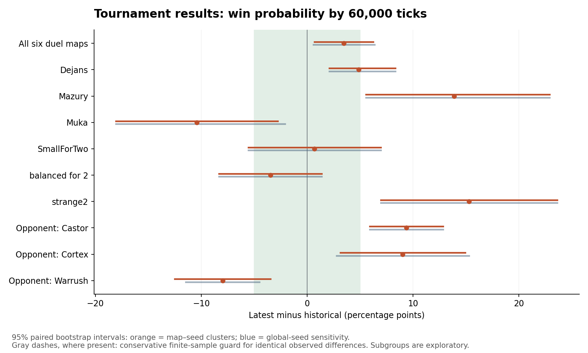
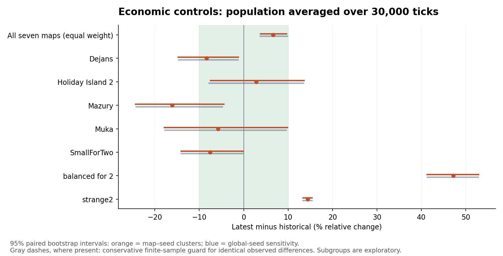
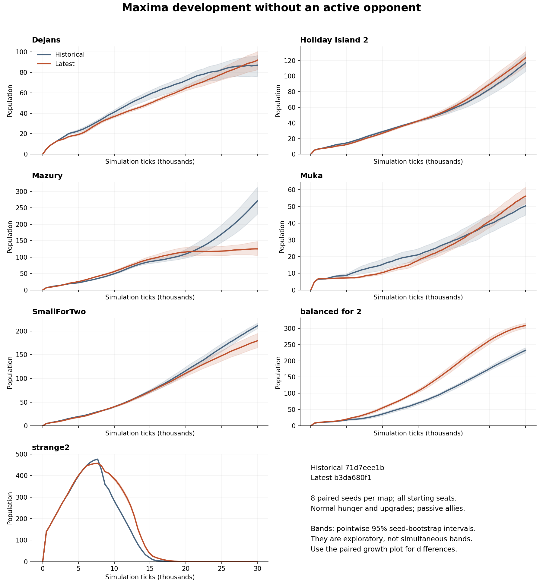

Frozen candidate · 2,080 confirmatory games · 72 pilot games excluded · 256 original controls retained separately · Native Linux
This tests whether the current Maxima plays similarly to the pre-building-refactor version. It does not test whether either strategy is optimal. No AI tuning or engine changes were made during the experiment.
The duel win rate rose from 659/864 (76.3%) to 689/864 (79.7%): +3.47 percentage points, with a global-seed 95% interval of +0.58 to +6.37 points. That is evidence of an aggregate relative-balance improvement on these fixed matchups, but the interval extends beyond the preset ±5-point equivalence margin. The opposing native AIs also changed, so this cannot be attributed solely to Maxima.
The opponent breakdown matters: win rate increased by 9.4 points against Castor and 9.0 against Cortex, but fell 8.0 points against Warrush. By map, Muka fell 10.4 points while Mazury and strange2 improved 13.9 and 15.3 points. These subgroup estimates are exploratory, not adjusted for multiple comparisons.
The pooled fixed-window population-time measure increased 6.6%, with both 95% intervals inside ±10%. This narrow pooled check passes. It does not establish similar development on each map: balanced_for_2 increased 47.2%, Mazury decreased 16.1%, and SmallForTwo decreased 7.6%. Mazury's final population at 30,000 ticks dropped from 271.3 to 125.2 (−53.9%; seed-bootstrap interval approximately −63.7% to −41.3%). On strange2, both versions' control populations eventually collapse to zero; a higher population-time average there reflects a different trajectory, not a sustainable colony.
Military preparation is also different. In passive controls, every historical run recorded training, compared with 89.3% of latest runs under equal-map weighting. First-training capped time increased from 6,206 to 9,875 ticks; first-barracks capped time increased from 7,934 to 11,500 ticks. Missing events count at 30,000, so these scores combine later action and failure to reach the event. Competitive matches show the same direction. These are stronger reasons to investigate the planning priorities than to conclude from aggregate wins that strategy was preserved.
The next focused diagnosis should trace the Mazury growth plateau, the delayed barracks/training decisions, and the Warrush matchup decline. Any tuning should then be evaluated on a new held-out seed set; this completed cohort should remain fixed regression evidence. No tuning was done during this validation.
| Measure | Games / version | Historical | Latest | Change | 95% map–seed CI | 95% global-seed CI | Decision |
|---|---|---|---|---|---|---|---|
| Duel win probability | 864 | 0.763 | 0.797 | +3.47 pp | +0.7 to +6.3 | +0.6 to +6.4 | Similarity not established |
| Passive population-time mean | 128 | 75.564 | 80.545 | +6.6% | +3.7 to +9.6 | +3.7 to +9.8 | Within preset margin (both intervals) |
| Four-player supplement | 48 | 0.687 | 0.687 | +0.00 pp | identical observed; guard ±52.7 | identical observed; guard ±52.7 | Similarity not established |
Win margins were ±5 percentage points; population-time margin was ±10%. Both reported 95% intervals must be wholly within the margin. Failure to establish similarity can reflect a real difference or insufficient precision. A pooled pass does not establish similarity on every map or every strategic behavior.

| Version | Games | Wins | Losses | Maxima unresolved | Whole game unresolved | Starvation deaths | Starvation / 1,000 unit-ticks |
|---|---|---|---|---|---|---|---|
| historical | 864 | 659 | 172 | 33 | 33 | 62725 | 0.0348 |
| latest | 864 | 689 | 143 | 32 | 32 | 52993 | 0.0288 |
Paired outcome transitions: {"lost -> lost": 80, "lost -> unresolved": 9, "lost -> won": 83, "unresolved -> lost": 5, "unresolved -> unresolved": 7, "unresolved -> won": 21, "won -> lost": 58, "won -> unresolved": 16, "won -> won": 585}.
| Version | Games | Wins | Losses | Maxima unresolved | Whole game unresolved | Starvation deaths | Starvation / 1,000 unit-ticks |
|---|---|---|---|---|---|---|---|
| historical | 48 | 33 | 3 | 12 | 12 | 716 | 0.0055 |
| latest | 48 | 33 | 5 | 10 | 10 | 799 | 0.0062 |
Paired outcome transitions: {"lost -> lost": 3, "unresolved -> lost": 1, "unresolved -> unresolved": 8, "unresolved -> won": 3, "won -> lost": 1, "won -> unresolved": 2, "won -> won": 30}.
Scope: each engine runs its own contemporary Cortex, Castor, and Warrush. These opponents also changed during the refactor. The tournament therefore measures relative balance across the two versions, not an isolated causal effect of Maxima alone. Unresolved games count as not won in the win-by-60,000-ticks outcome; none are removed. In four-player games, Maxima may already have lost while the remaining players are unresolved; the two unresolved columns distinguish this.


Controls use identical no-op JavaScript allies, normal hunger and upgrades, and a fixed 30,000-tick observation horizon. Script-only outcome conditions keep the observation window open; engine defeat still disables the AI as usual. These isolate development from opponent-policy changes, but they do not simulate competitive pressure.
| Map | Final population change | Producer-count time mean change | Feeding-count time mean change | Upgrade count change | Training visit count change |
|---|---|---|---|---|---|
| Dejans | +5.6% | +17.6% | +33.3% | +159.6% | +13.0% |
| Holiday Island 2 | +5.3% | +3.0% | +31.0% | -6.4% | -7.7% |
| Mazury | -53.9% | -14.5% | +16.7% | -57.1% | -51.0% |
| Muka | +11.6% | +5.8% | +16.2% | -43.5% | -11.2% |
| SmallForTwo | -15.0% | -1.0% | +43.9% | -18.3% | -9.1% |
| balanced for 2 | +32.9% | +34.3% | +53.8% | +21.5% | +6.8% |
| strange2 | undefined | +9.3% | +818.2% | undefined | -84.7% |
Producer/feeding counts can include construction sites. Averages in this table are exploratory point estimates; complete uncertainty estimates are in the analysis JSON. Zero historical denominators produce undefined relative changes.
| First observed event | Historical reached | Latest reached | Historical capped tick | Latest capped tick | Change | 95% map–seed CI (%) | 95% global-seed CI (%) |
|---|---|---|---|---|---|---|---|
| population 50 | 89.4% | 87.2% | 15517 | 16248 | +4.7% | -1.7 to +11.5 | -2.8 to +12.6 |
| population 100 | 54.5% | 62.8% | 36560 | 32675 | -10.6% | -13.6 to -7.5 | -13.9 to -7.3 |
| second producer | 85.6% | 85.9% | 16456 | 15069 | -8.4% | -15.1 to -1.7 | -14.5 to -1.8 |
| new producer | 51.0% | 56.6% | 37618 | 34239 | -9.0% | -12.6 to -5.2 | -13.6 to -4.3 |
| school | 73.6% | 69.6% | 25152 | 27333 | +8.7% | +4.5 to +13.0 | +4.8 to +12.5 |
| upgrade | 65.3% | 65.0% | 31480 | 31823 | +1.1% | -2.3 to +4.6 | -2.8 to +5.2 |
| training | 97.6% | 90.2% | 6411 | 11612 | +81.1% | +65.3 to +98.1 | +64.8 to +99.7 |
| barracks | 97.5% | 91.4% | 6927 | 11317 | +63.4% | +50.4 to +77.0 | +50.8 to +76.7 |
| warrior birth | 100.0% | 100.0% | 663 | 661 | -0.3% | -1.0 to +0.4 | -1.1 to +0.4 |
| offensive target | 83.1% | 82.8% | 13876 | 13636 | -1.7% | -11.0 to +8.5 | -10.3 to +7.4 |
| combat damage | 99.7% | 99.2% | 3808 | 4273 | +12.2% | +1.0 to +24.6 | -0.7 to +27.6 |
| operating colony | 8.7% | 3.0% | 57069 | 58964 | +3.3% | +2.2 to +4.4 | +2.0 to +4.6 |
| First observed event | Historical reached | Latest reached | Historical capped tick | Latest capped tick | Change | 95% map–seed CI (%) | 95% global-seed CI (%) |
|---|---|---|---|---|---|---|---|
| population 50 | 91.5% | 95.1% | 13592 | 13341 | -1.8% | -5.6 to +1.5 | -6.9 to +2.4 |
| population 100 | 67.9% | 67.4% | 20655 | 19964 | -3.3% | -6.3 to -0.5 | -6.2 to -0.8 |
| second producer | 95.5% | 96.4% | 7264 | 6436 | -11.4% | -25.0 to +5.7 | -21.6 to +1.6 |
| new producer | 79.0% | 79.9% | 16704 | 15814 | -5.3% | -11.1 to +1.5 | -9.6 to -1.0 |
| school | 74.6% | 79.9% | 19393 | 19296 | -0.5% | -5.1 to +4.6 | -4.7 to +4.7 |
| upgrade | 64.3% | 72.3% | 22622 | 22496 | -0.6% | -3.7 to +2.8 | -4.3 to +3.2 |
| training | 100.0% | 89.3% | 6206 | 9875 | +59.1% | +44.4 to +74.7 | +42.6 to +79.1 |
| barracks | 99.1% | 89.3% | 7934 | 11500 | +44.9% | +33.4 to +57.5 | +32.1 to +60.2 |
| warrior birth | 100.0% | 100.0% | 695 | 718 | +3.3% | +1.0 to +5.7 | +1.3 to +5.3 |
| offensive target | 0.0% | 0.0% | 30000 | 30000 | +0.0% | +0.0 to +0.0 | +0.0 to +0.0 |
| combat damage | 0.0% | 0.0% | 30000 | 30000 | +0.0% | +0.0 to +0.0 | +0.0 to +0.0 |
| operating colony | 26.3% | 19.2% | 26583 | 27374 | +3.0% | -1.7 to +7.7 | -1.1 to +7.3 |
Unobserved events are assigned the cohort cap (60,000 competitive; 30,000 passive). Capped times are descriptive bounded scores, not uncensored survival estimates: match completion can prevent observation. Lower scores mean earlier or more frequently reached events. Population/building observations have a 512-tick sampling interval; completion and activity counters also use 512-tick samples plus the exact final sample. “Offensive target” is intent, not attack launch; “combat damage” includes defensive fighting and towers. “Second producer” can include a site; “new producer,” school, barracks, and upgrades use actual completion counters. Milestones and subgroups are exploratory, without multiplicity adjustment.
The original death-only setup ended two of 256 controls early. One latest run ended with 130 units still present, making final-value carry-forward an invalid observed growth measure. All 256 controls were therefore repeated with exactly the same binaries, maps, seeds, seats, alliances and passive script, using script-only outcomes. Every corrected run reaches 30,000 ticks, and every recorded economy and measurement prefix matches its original through the original observation window. Original runs and defeat times are retained; this was a setup correction before aggregate results were inspected, not an outcome-selected sample extension. Totals: 2,408 executions including 72 pilot games, 256 original controls and 2,080 final comparison games.
Duels: six maps × three opponents × 24 seeds × both seats × two versions = 1,728 games. Four-player supplement: four seeds × three opponent types × four Maxima seats × two versions = 96 games. Passive controls: eight seeds × every seat on all seven maps × two versions = 256 games.
Seed pairs and starting seats are retained together in uncertainty estimates. Each fixed map receives equal weight. The primary bootstrap resamples map–seed clusters within maps; the sensitivity calculation resamples global seeds with all maps together. There are 10,000 replicates. The pilot was used only to size the frozen confirmation set, not to contribute outcomes. The four-player cohort has only four independent seeds and is correspondingly exploratory.
| Build | Commit | SHA-256 |
|---|---|---|
| historical | 71d7eee1bb2c7105d7f1711a799c967c96687cca | bfe350e01e93fdebacaaf8d262b84adb42441f0cf0ec6e72b9179b6cb150a80f |
| latest | b3da680f163041b55a7b5ced65f6153d45e13076 | af069c6963690e7b391f99c3b655fe8fbeb7ff023f7b84f25333690af054794e |
Inputs, commands and outputs are retained under each cohort directory. Every game has a command record, compressed telemetry, result JSON and final save. This is behavioral validation on native Linux, not cross-platform determinism or a CPU performance comparison. Parallel load makes wall-clock timing unsuitable for performance conclusions. Evidence is local; it has not been attached to a PR or uploaded.